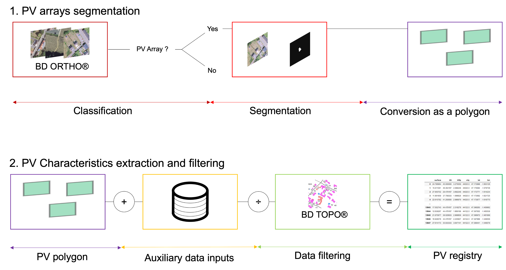

An open-source, deep learning-based pipeline that maps rooftop photovoltaic installations from aerial imagery, at national scale — and the research foundation Solar Dashboard is built on.
 Rooftop PV systems mapped by DeepPVMapper across France — the darker, the higher the installed capacity. Explore the project →
Rooftop PV systems mapped by DeepPVMapper across France — the darker, the higher the installed capacity. Explore the project →
The pipeline
DeepPVMapper is a two-stage deep learning pipeline, inspired by 3D-PV-Locator (Meyer et al., 2022). A classification model (Inception v3) first flags candidate image patches on aerial imagery; these patches are then segmented with DeepLab v3 to extract precise rooftop PV polygons. Detections are cross-referenced with the BD TOPO® building database to keep only rooftop-mounted systems and merge detections belonging to the same roof, then characterized with PyPVRoof (surface, tilt, orientation, installed capacity) to produce a geolocated PV registry. The models are trained on BD-PV, an annotated dataset built on IGN's BD ORTHO® aerial imagery.

From aerial imagery to geolocated PV registry — explore the pipeline in detail →Auditing grid-connection registries
Because DeepPVMapper's detections are independent of administrative records, they can be used to audit official grid-connection registries (RTE/RNI) rather than the other way around. After correcting for the pipeline's measured precision and recall by département, the resulting estimates reveal a systematic underestimation of rooftop PV in these registries, particularly in rural areas. Read the full analysis →.
Click here  to download the minimum data (images, model weights, additional data) to replicate the example provided in the
GitHub repository, or here
to download the minimum data (images, model weights, additional data) to replicate the example provided in the
GitHub repository, or here  to download the full registry of 520k+ detected PV systems.
to download the full registry of 520k+ detected PV systems.
References:
- Kasmi, G., Dubus, L., Blanc, P., & Saint-Drenan, Y. M. (2022). Towards unsupervised assessment with open-source data of the accuracy of deep learning-based distributed PV mapping. arXiv preprint arXiv:2207.07466.
- Kasmi, G. (2024). Enhancing the Reliability of Deep Learning Models to Improve the Observability of French Rooftop Photovoltaic Installations. PhD thesis, Université Paris sciences et lettres.